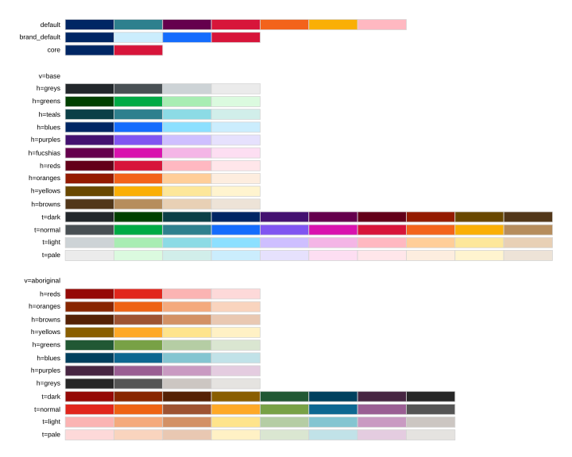
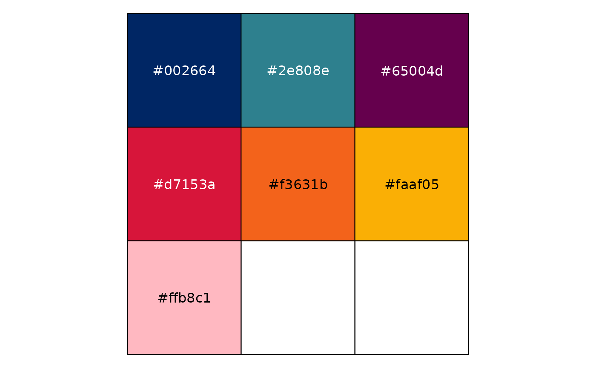
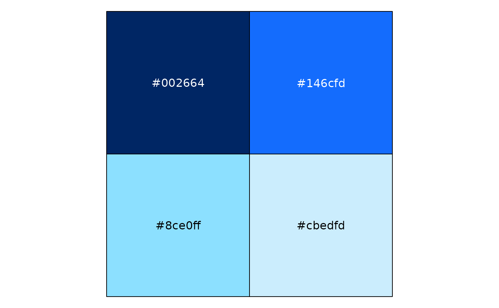
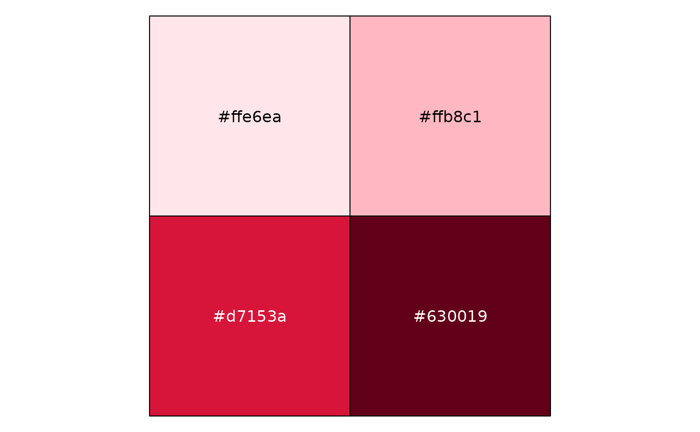
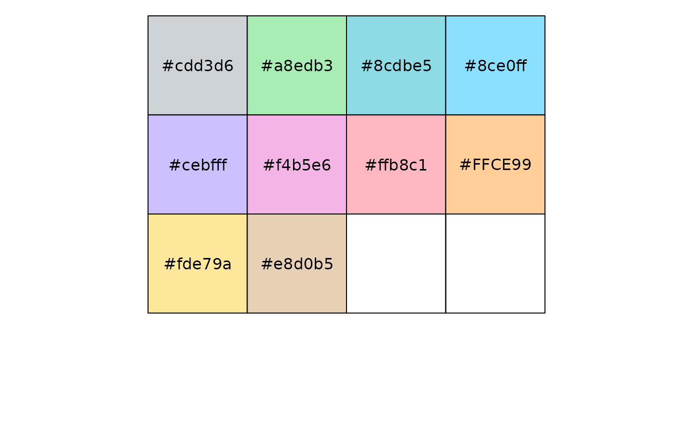
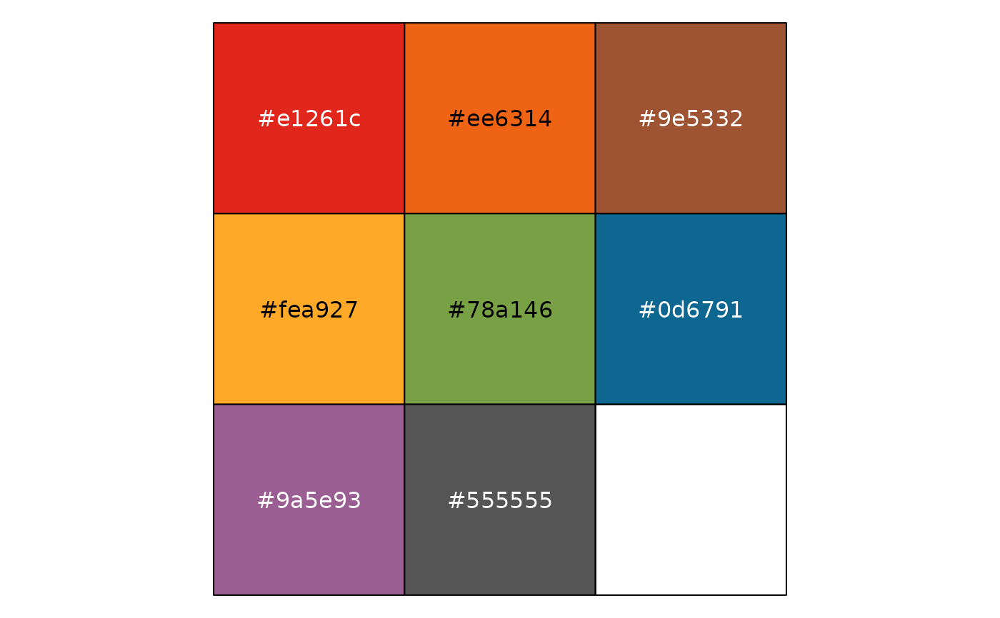
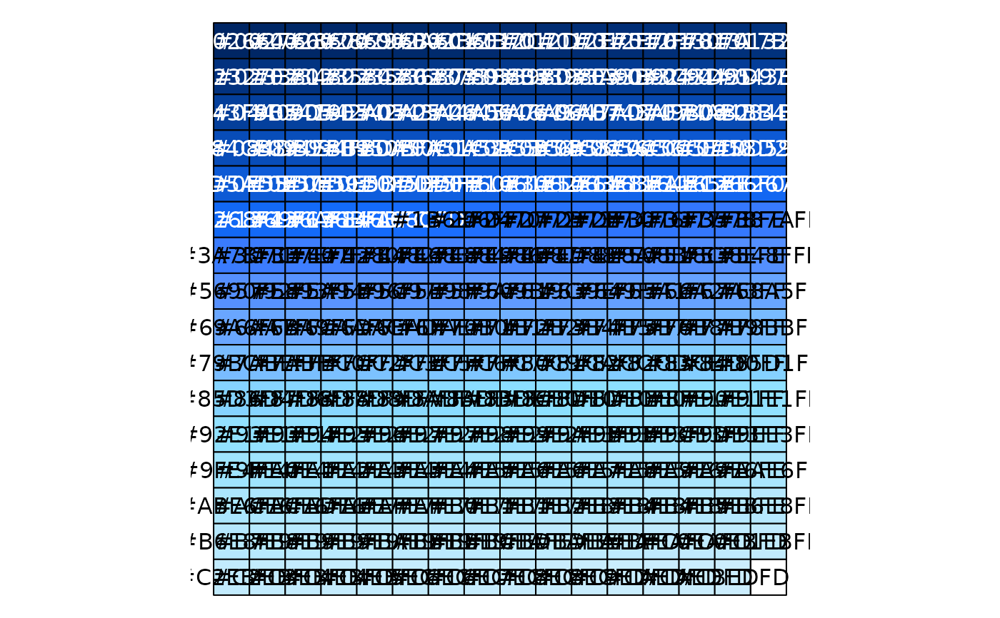

Palettes created using the NSW Design System.
There are several named palettes which can be specified with palette.
To use palettes based on the NSW Design System colour grid, either
specify hue and allow the shade to vary, or specify shade to allow the
hue to vary.
To use the Aboriginal colour grid, specify variant = "aboriginal".

Usage
nsw_colours
pal_nsw(
palette = waiver(),
hue = NA,
shade = NA,
variant = c("base", "aboriginal"),
direction = 1
)Arguments
- palette
Name of the palette: default, brand_default, neg_to_pos, colour_blind.
- hue
Name or index of the hue - see Details. Ignored if
paletteis specified.- shade
Name or index of the shade - see Details. Ignored if
paletteis specified.- variant
Name of palette variant. Ignored unless
hueorshadeis specified.- direction
Set to -1 to reverse the order of colours in the palette, or 1 for the original order.
Value
A palette object (see palette constructors)
Details
The "base" variant supports:
hue: greys, greens, teals, blues, purples, fucshias, reds, oranges, yellows, browns
shade: dark, normal, light, lighter
The "aboriginal" variant supports:
hue: reds, oranges, browns, yellows, greens, blues, purples, greys
shade: dark, normal, light, lighter
Anchor colours used to create the NSW colour palettes can also be used
stand-alone (e.g. nsw_colours$blue_01 returns the hex code "#002664").
Examples
library(scales)
pal_nsw() |> show_col()

pal_nsw(hue = "blues") |> show_col()

pal_nsw(hue = "reds", direction = -1) |> show_col()

pal_nsw(shade = "light") |> show_col()

pal_nsw(shade = "normal", variant = "aboriginal") |> show_col()

# you can interpolate colours by converting to a continuous scale
pal_nsw(hue = "blues") |> as_continuous_pal() |> show_col()
